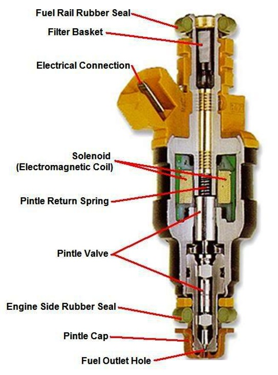

Regent Fuel Injectors has been a trusted name in the automotive industry since 2014, specialising in diagnostic testing, servicing and cleaning of gasoline fuel injectors. We combine hands-on expertise with advanced technology to move beyond outdated trial-and-error methods — delivering faster, more accurate diagnostics and consistent results every time.
To stay at par with the technology, we continuously upgrade our equipment to keep ahead of evolving industry standards. Our systems are approved by global leaders such as BOSCH, Delphi and Magneti Marelli, allowing us to perform precise and efficient testing on all types of fuel injectors.
At Regent, our mission is to build value for our customers through collaboration, trust and attention to detail. We take the time to understand each client's needs and work closely to restore performance, improve efficiency and extend the life of their engines.
We support automotive dealers, workshops, vehicle owners, fuel injector service centres, as well as marine and motorsport clients. Our comprehensive diagnostic and repair solutions target the root cause of injector issues — ensuring restored performance, improved fuel efficiency and dependable operation.
As leaders in gasoline fuel injector servicing, we take pride in our technical expertise, transparent processes and quick turnaround times. At Regent Fuel Injectors, every injector we service is renewed to meet original performance standards — with precision, reliability and customer satisfaction at the core of everything we do.

A fuel injector is an electronically controlled valve that both meters flow of fuel and atomizes fuel. The injector is located on the intake manifold of the engine, and is sealed between the manifold and the fuel supply rail.
Fuel injectors are normally fed power continuously when the ignition key is on. The computer controls the negative or ground side of the circuit. The (ECM or ECU or PCM) computer gathers information from various sensors and, using this information, determines the injector's opening duration required for that combustion stroke. When the computer provides the injector with a ground (flips the switch on), the circuit is completed and current is allowed to flow through the injector's electromagnetic coil.
Most injectors use a 10 to 20 micron internal final filter screen. A small 25% restriction in the injector filter will cause the ECM to increase the injector's on-time by 25% to make up for the restricted filter and the loss of fuel flow.
The injector will remain open anywhere between 1 to 20 milliseconds depending on the engine's needs (as determined by the ECM). The current stops when the computer removes the electric ground to the injector, the electromagnetic coil becomes de-energized and a small coil spring pushes the valve needle to the pintle seat and cuts off fuel flow.
Most dirty and clogged fuel injectors respond well to our ultrasonic fuel injector cleaning service and are restored to a "like new" clean condition and performance.
